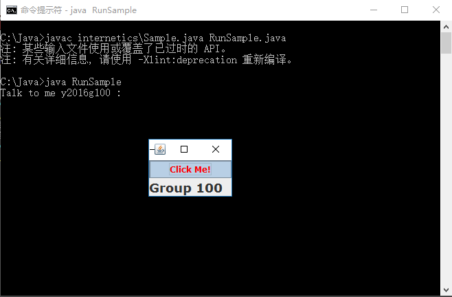

Snapshot :

/* RunSample.java */
class RunSample {
public static void main(String args[]) {
new internetics.Sample("y2016g100").show();
}
}
/*
* Sample.java
* Class description and usage here.
* Created on 15 October 2003
*/
package internetics;
/**
* @author Julia
* @version 1.2
*/
import javax.swing.*;
import java.awt.*;
import java.awt.event.*;
import java.io.*;
import java.util.*;
// import com.ralph.*;
public class Sample extends JFrame
implements java.awt.event.ActionListener{
private JButton jButton1; // this button is for pressing
private JLabel jLabel1;
private String name;
private Scanner input;
/** Creates new object ChooseFile */
public Sample() {
initComponents();
name = "";
selectInput();
}
public Sample(String name) {
this();
this.name = name;
}
private void initComponents() {
Color bright = Color.red;
jButton1 = new JButton();
jLabel1= new JLabel();
addWindowListener(new WindowAdapter() {
public void windowClosing(WindowEvent evt) {
exitForm(evt);
}
});
getContentPane().setLayout(new java.awt.GridLayout(2, 1));
jButton1.setBackground(Color.white);
jButton1.setFont(new Font("Verdana", 1, 12));
jButton1.setForeground(bright);
jButton1.setText("Click Me!");
jButton1.addActionListener(this);
jLabel1.setFont(new Font("Verdana", 1, 18));
jLabel1.setText("Group 100");
jLabel1.setOpaque(true);
getContentPane().add(jButton1);
getContentPane().add(jLabel1);
pack();
};
public void actionPerformed(ActionEvent evt) {
System.out.print("Talk to me " +name+ " : ");
try {
jLabel1.setText(input.nextLine());
} catch (InputMismatchException ime) {
jLabel1.setText("Ow! You pushed my button");
System.err.println("InputMismatch Error: " + ime);
}
}
/** Exit this Application */
private void exitForm(WindowEvent evt) {
System.exit(0);
}
/** Initialise and Buffer input Stream */
private void selectInput() {
input = new Scanner(System.in);
}
/** Getter for name prompt */
public String getName() {
return name;
}
/** Setter for name prompt */
public void setName(String name) {
this.name = name;
}
/**
* @param args the command line arguments
*/
public static void main(String args[]) {
new Sample("Jess").show();
}
}